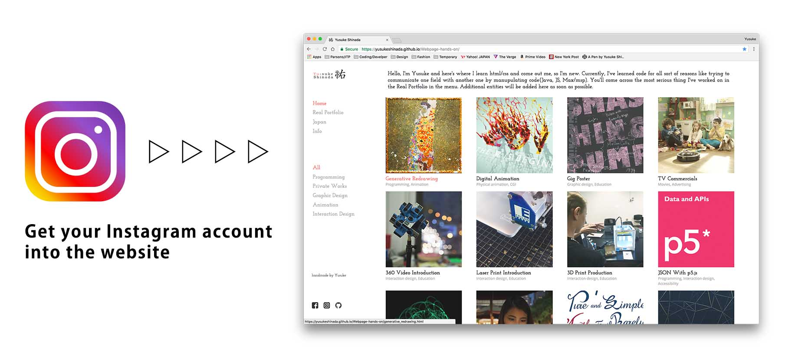
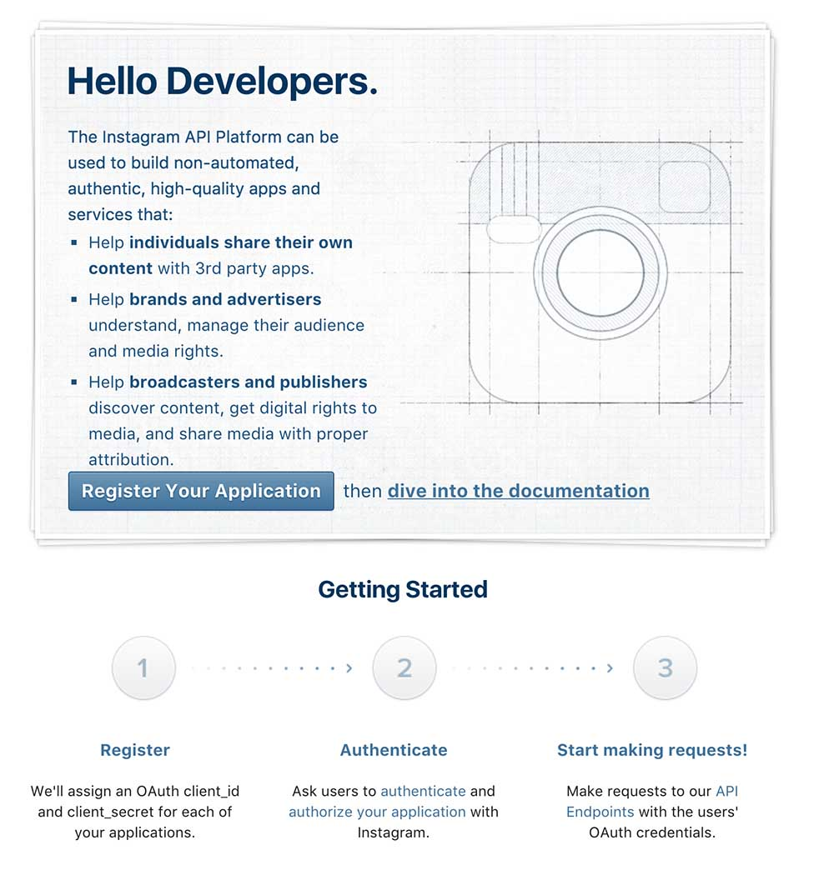
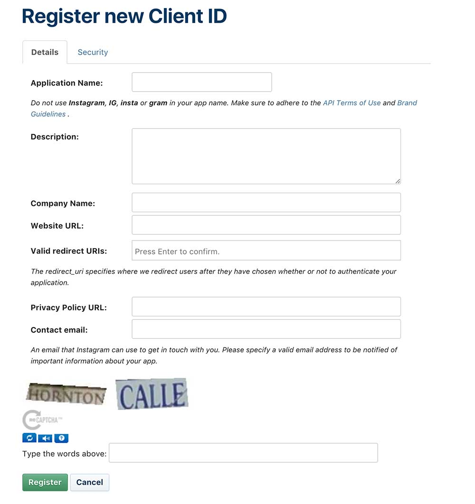
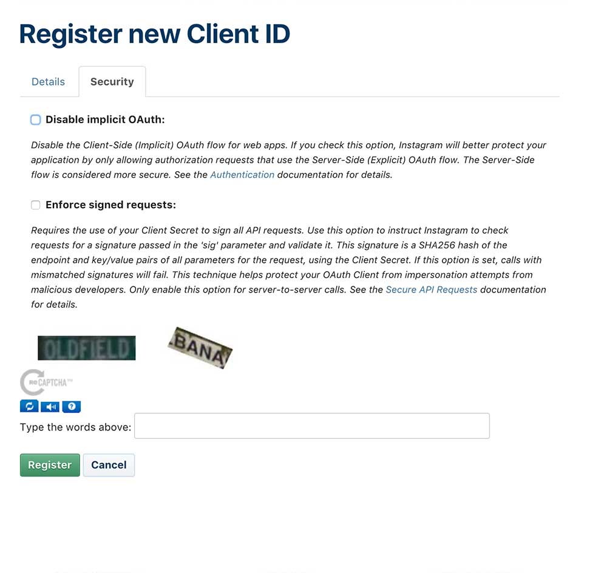
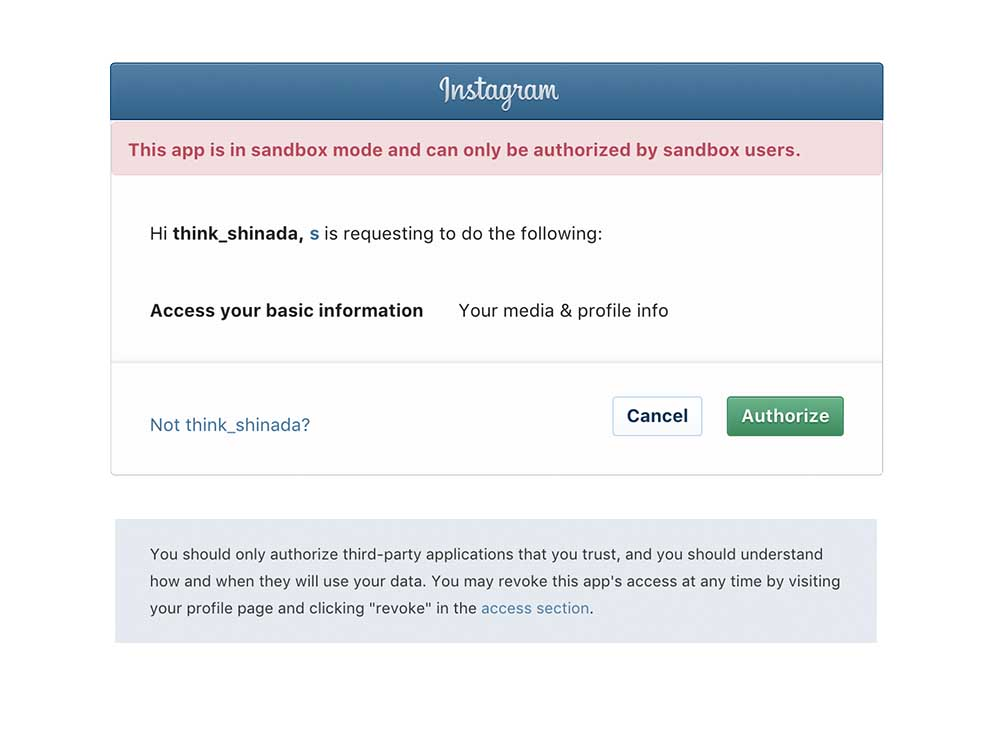

Bring your Instagram into the website 101
Programming, Interaction design, Accessibility
Tools Used : p5.js, API
We can bring an Instagram acount into your website with API. This doesn't mean to embed your ceartain photos or videos on the website like this, so that those stuffs you did upload on Instagaram automatically will be uploaded on the website as soon as you do. Json used is a kind of data file and we grab its values into our code easily to get the data visualized.
If you're not familiar to API or don't learn, please take a look at Snap Widget without API.

The summary:
- Register to get the API key and also client ID. - the process 1 through 2.
- Authenticate and acquire the token. - the process 3.
- Access to the URL with the token to confirm JSON data. - the process 4.
- How you can manipulate the JSON by p5.js. - the process 5.
Here is the introduction about how you can manipulate API acquired from Instagram.
The API data from:
Instagram developer
The process 1:
Access to Instagram above and sign up. You difinitely need this process whereever you get API key. Whataever your contents will work well by putting your API key into a certain URL.
- Hit the Register Your Application in the middle of the page.

The process 2-1:
You will see these boxes and should fill out.
- Please, type your information into the boxes.
- Application Name - Whatever
- Description- Whatever
- Website URL - the URL of your website
- Valid redirect URIs - the URL of your website
- Contact email - Your e-mail address

The process 2-2:
Move on into Security tab.
- Uncheck the Disable implicit OAuth.
- Press the Register with the security words displayed.

The process 3:
You finally get authenticated and acquire the token in this part. You have already had what you need to authenticate such as the CLIENT-ID and REDIRECT-URI.
- Please, access to
https://api.instagram.com/oauth/authorize/?client_id=CLIENT-ID&redirect_uri=REDIRECT-URI&response_type=co.
- Make sure the URL you did and you can see the CLIENT-ID and REDIRECT-URI after " = " in the URL. In this part where you must replace the contents you registered for the first time . When done, Reload the page and move on the next page below.
- Press the Authorize in green.

The process 4:
← Back to Home